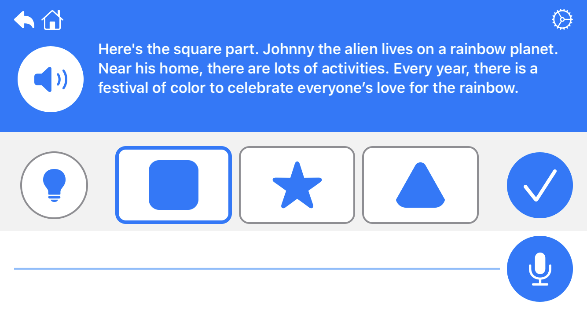
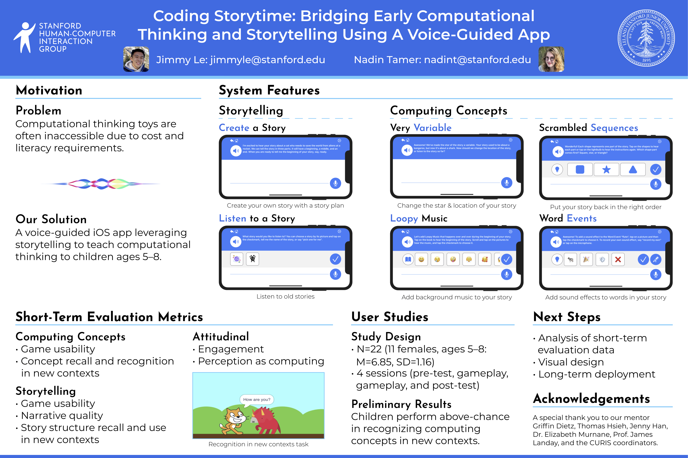

find me on the interwebs!

🌲 🌈 💻 ✨ 📚
Tools: Swift, SwiftUI, Firebase
StoryCoder is an iOS app that teaches young children (ages 5-8) computational thinking concepts through storytelling activities. I helped build StoryCoder as part of my work as an undergraduate researcher at Stanford HCI Group from April to August 2020.
Specifically, I was responsible for building Scrambled Sequences: a game that teaches kids about sequencing by having them put a scrambled story back in the right order. During this process, I conducted numerous user studies with children to determine the most effective user interface and iterated over many different versions of what eventually came to be the final game.
I absolutely loved getting to work on a project that combined my interests in computer science and education, especially one where I had the chance to work with kids! Developing Scrambled Sequences taught me a lot about the design process, conducting user studies and what really matters in a user experience.
Below is a screenshot from Scrambled Sequences. Each part of the story (beginning, middle, and end) is represented by a shape, and children pick at each step which shape part comes next.
At the Stanford CURIS 2020 Poster Session, my fellow undergraduate researcher and I were proud to receive the "Outstanding Poster Award" (awarded to 4 teams out of 100+) for our work on StoryCoder. A copy of our poster can be viewed below.
find me on the interwebs!